The Image Compression Function
Here's how I set this up: for an image stored as an n × p matrix X, I form the cross product V = X′X, eigendecompose it as V = UΛU′, and get the principal component scores Z = XU. The rank-k approximation just keeps the first k columns of Z and U: X(k) = ZkUk′. For the error I just take the Frobenius norm of whatever's left over, X − X(k).
compress_image <- function(x, k) {
x <- as.matrix(x)
p <- ncol(x)
if (k < 1 || k > p) {
stop("k must be between 1 and ncol(x)")
}
V <- t(x) %*% x # p x p cross product
eig <- eigen(V, symmetric = TRUE)
U <- eig$vectors # p x p eigenvectors
Z <- x %*% U # n x p PC scores
Uk <- U[, 1:k, drop = FALSE]
Zk <- Z[, 1:k, drop = FALSE]
approx <- Zk %*% t(Uk) # rank-k approximation of x
error <- norm(x - approx, type = "F") # Frobenius norm of the residual
list(approx = approx, error = error, U = U, Z = Z)
}The full source, along with the analysis script that produced every plot on this page, is in the GitHub repository for this project.
Image 1 (1000 × 100)
Original and rank 1–10 approximations
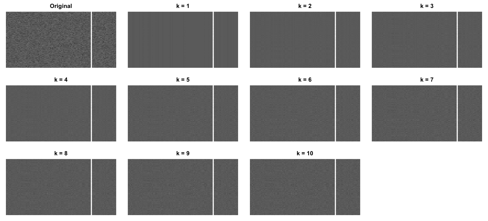
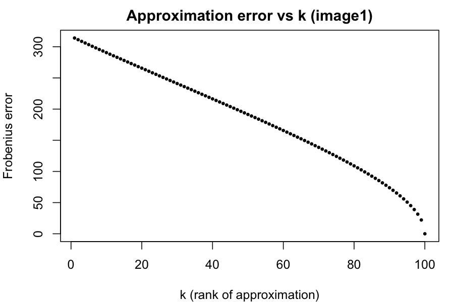
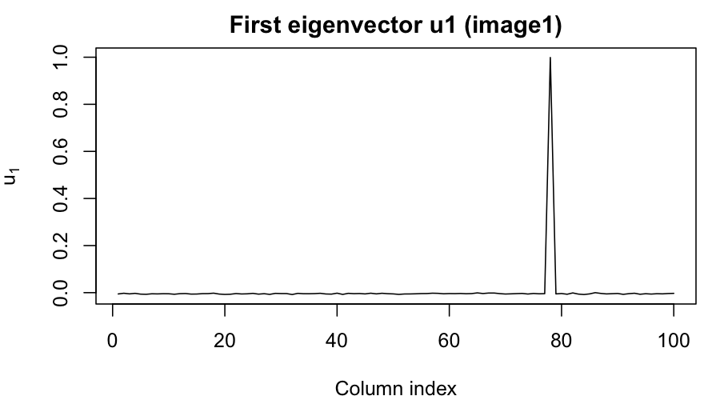
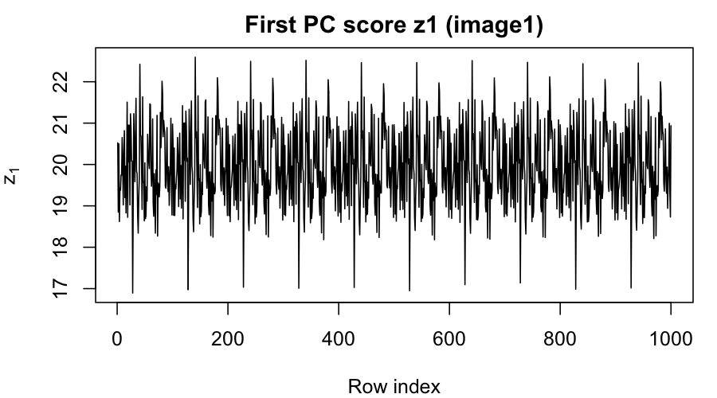
Interpretation
This one honestly surprised me a little. At k = 10 we're already capturing 83.0% of the variance, but the reconstruction still just looks like noise — there's no single big shape for a handful of components to latch onto. You can see it in the eigenvector plot too: u₁ is jumping up and down across all 100 columns instead of settling into one smooth curve, which tells me whatever structure is here isn't concentrated in a few directions, it's smeared across a lot of them. Same story for z₁ down the rows — no real trend, just noise. It takes all the way to k = 63 to hit 95% of the variance and k = 91 for 99%, which is basically the whole image.
Image 2 (1000 × 100)
Original and rank 1–10 approximations
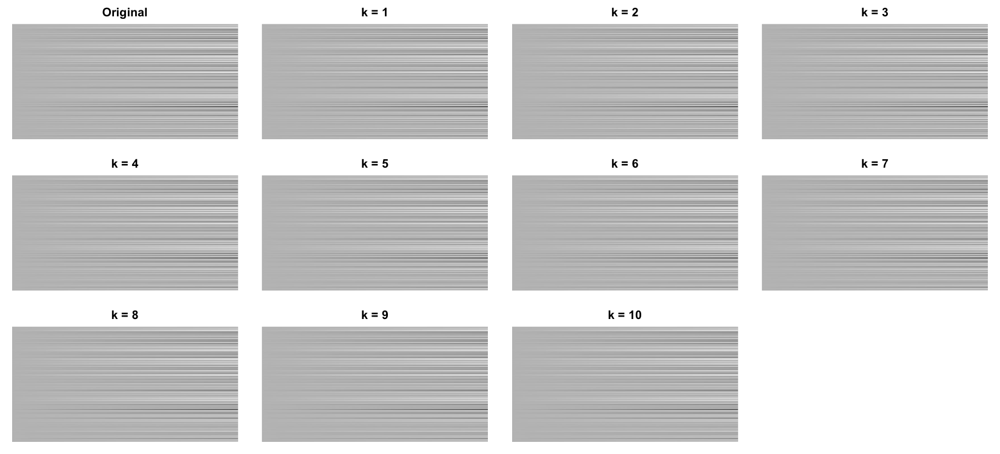
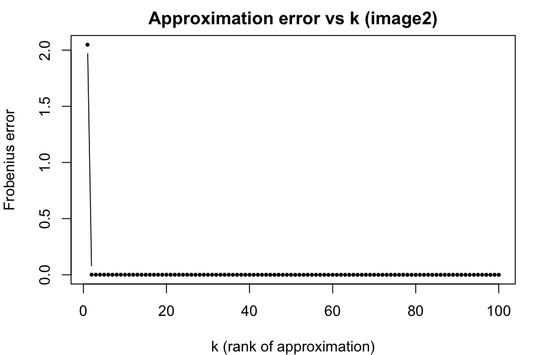
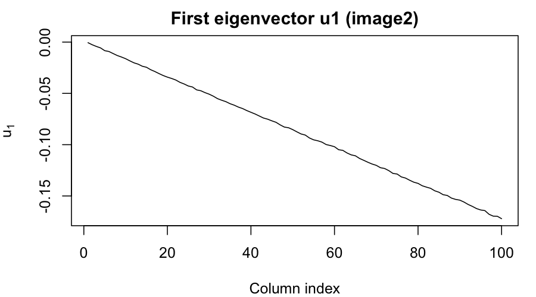
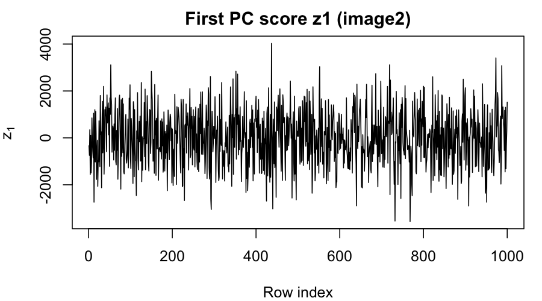
Interpretation
This one's the opposite story. A single component already explains basically 100% of the variance, and the rank-1 panel in the grid above is pretty much indistinguishable from the original. It makes sense once you look at the eigenvector: u₁ is one smooth profile across the 100 columns that's basically capturing the horizontal banding pattern on its own, and z₁ just tracks how strong that banding is as you move down the 1000 rows. There's really only one "mode" doing all the work here, so the rank-1 outer product z₁u₁′ reconstructs almost the whole image by itself.
Image 3 (400 × 300)
Swapped this one out for a personal photo (grayscale, downsized to 400×300) instead of the provided CSV, just to see how the method handles a real face.
Original and rank 1–10 approximations
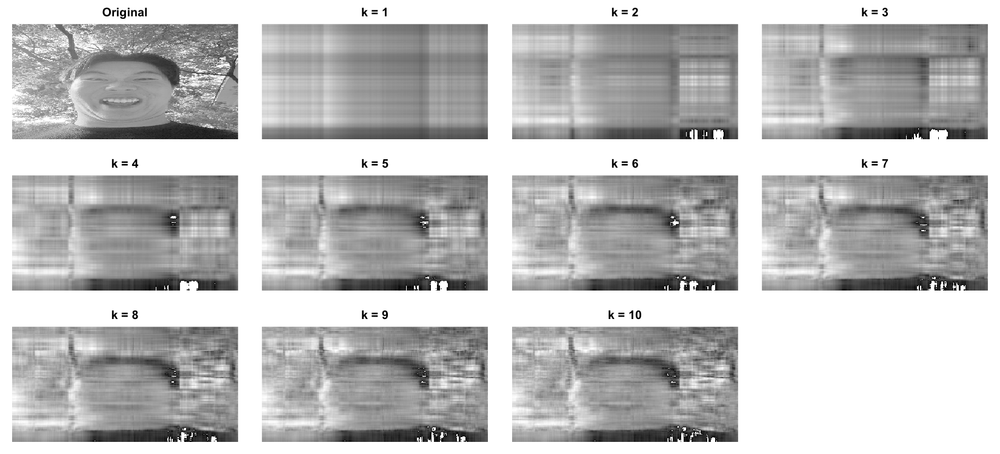
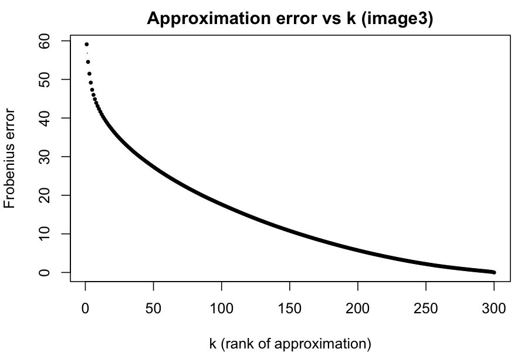
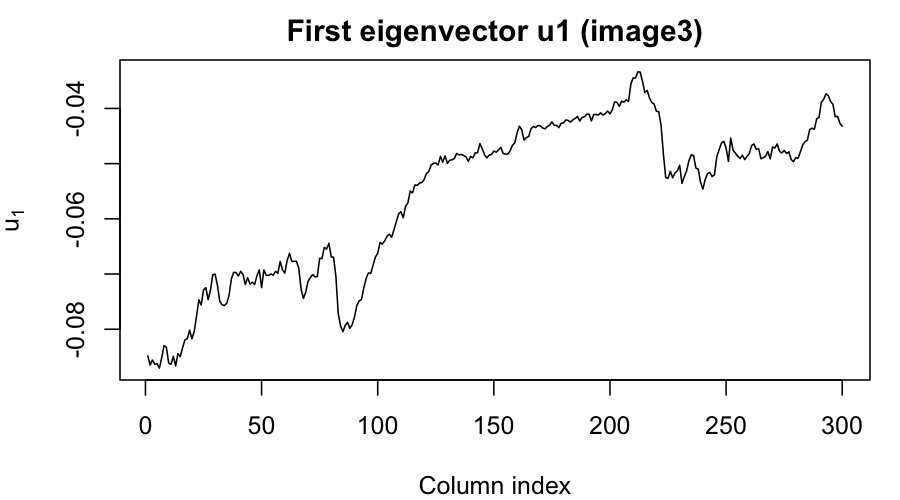
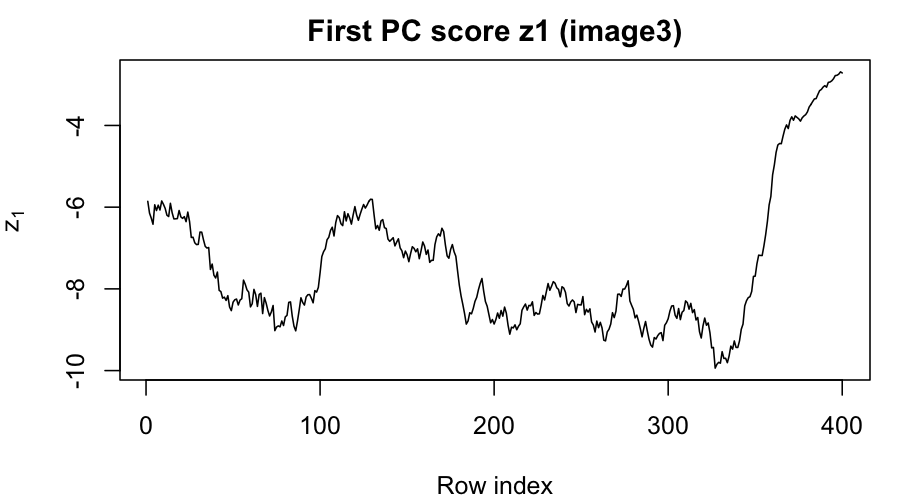
Interpretation
Even k = 1 already sketches out some vertical banding, and by k = 5 or 6 you can pick out the shape of my head against the trees behind me. By k = 10 it's basically recognizable, at 93.3% of the total variance. u₁ dips hardest around column 80, which lines up with the dark hair on the left side of the frame, then flattens out through the brighter tree-canopy/face area in the middle, and dips again near the hairline further right. z₁ sits around −6 to −10 for most of the rows — where the face and trees create a lot of left-right contrast for u₁ to pick up on — then swings sharply toward zero over the last ~50 rows. That's the plain dark t-shirt at the bottom of the photo: a flat, uniform region doesn't have much side-to-side variation, so it barely expresses the u₁ pattern at all.
Image 4 (213 × 119)
Original and rank 1–10 approximations
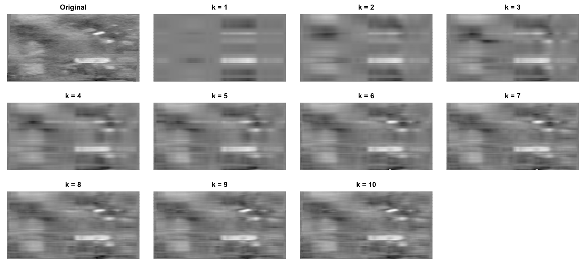
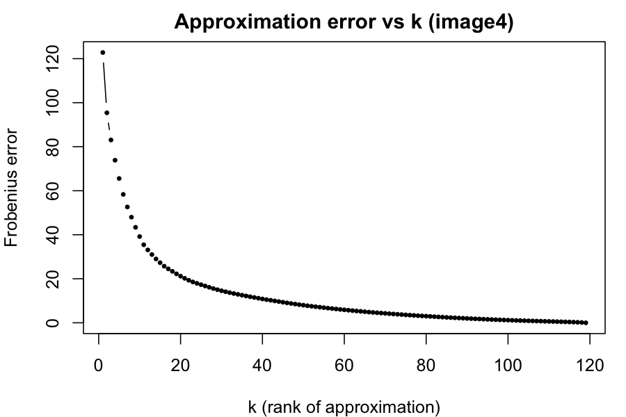
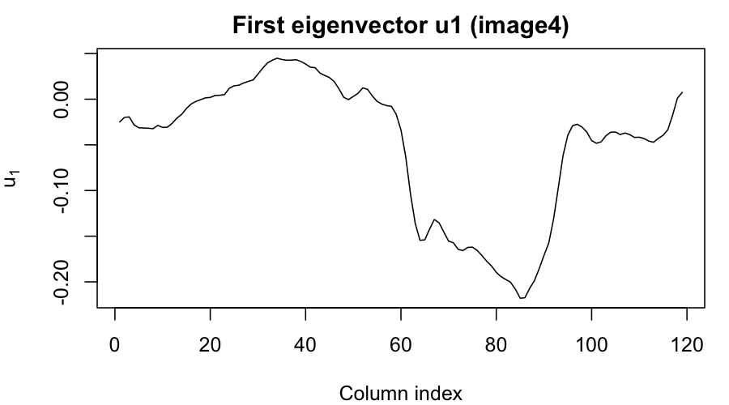
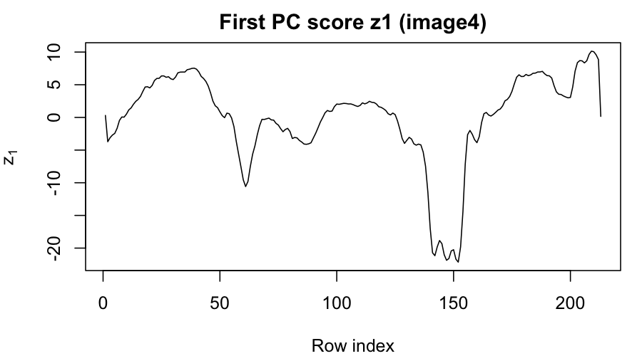
Interpretation
This scene (outdoor shot with a bright sign) is readable by about k = 5, and by k = 10 the whole thing — sign included — is legible, at 93.9% of the total variance (95% kicks in right at k = 11). u₁ is basically picking out the contrast between the bright sign and the darker surroundings across the 119 columns, and z₁ tracks how strong that contrast is as you move down the 213 rows, peaking right around where the sign sits.